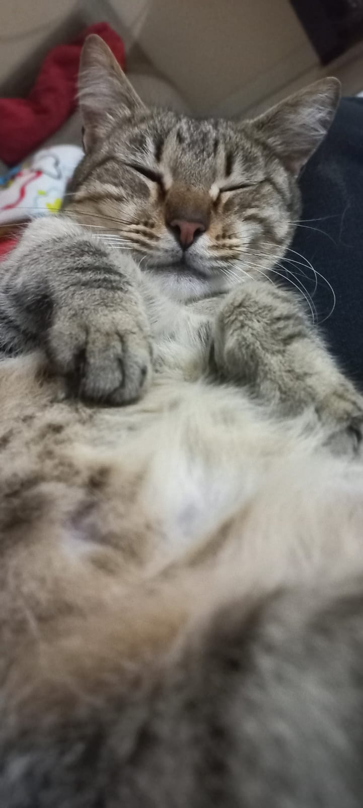
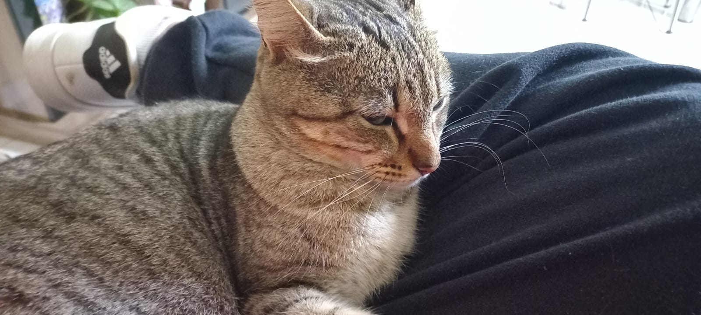
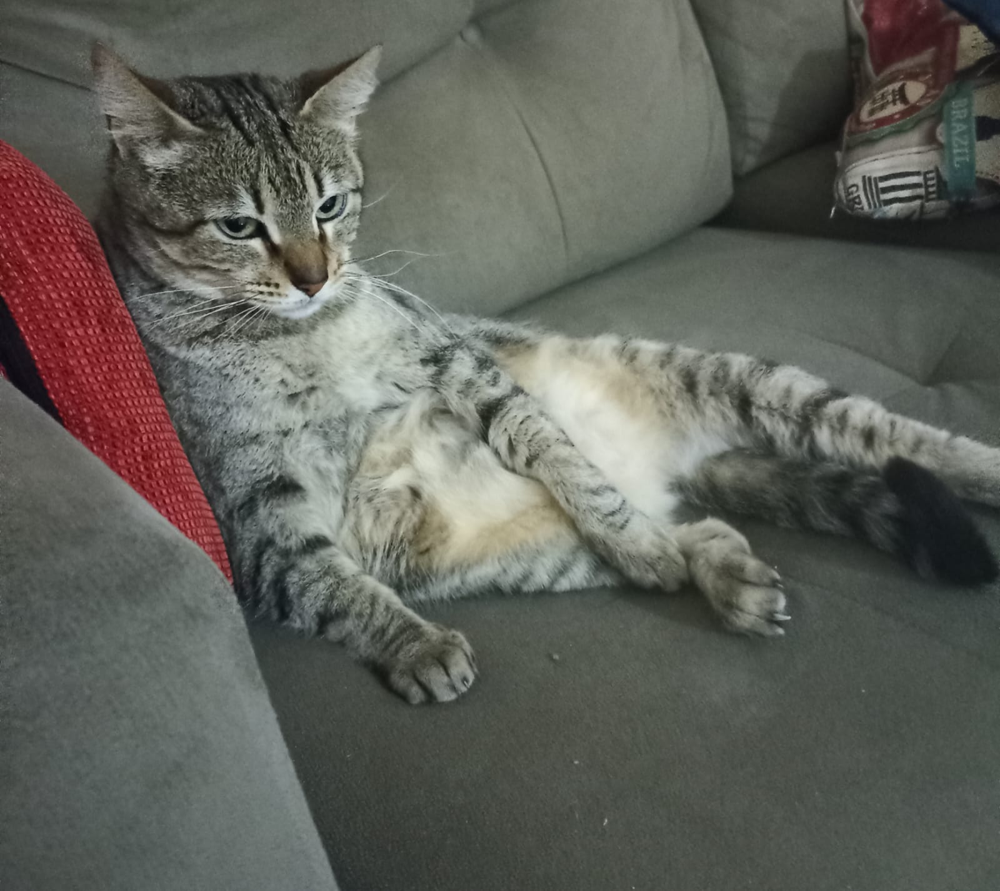

Pets
Murisca: A gata manhosa
A Murisca se considera como minha dona. Sempre que eu vou fazer algo e ela quer atenção, ela encontra uma maneira estratégica de me chamar, nunca miando, ela vai achar um jeito de chamar minha atenção não importa como.
Galeria de Fotos da Murisca



